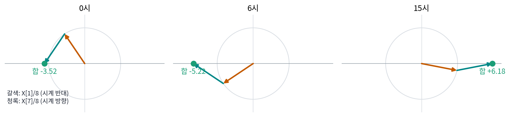

켤레 대칭: 실수 칸의 계수는 절반만 새롭다
기온 여덟 칸의 계수 막대를 다시 보면 이상한 점이 있다. 하루 한 번 물결 X[1] = −14.071 + 20.899i와 하루 일곱 번 물결 X[7] = −14.071 − 20.899i는 허수 부분의 부호만 다르다. X[2]와 X[6], X[3]과 X[5]도 그렇다. 3시간마다 잰 기온에 하루 일곱 번 오르내리는 물결이 하루 한 번 물결만큼 크게 들어 있다는 말일까? 그리고 실수 여덟 개를 넣었는데 복소수 여덟 개, 숫자로는 열여섯 개가 나왔지만, 정보가 두 배로 늘어날 리는 없으니 어딘가에 겹친 것이 있다.
역사: 실수 50만 개를 복소수 변환에 넣던 시절
고속 푸리에 변환이 나온 뒤 쿨리(James W. Cooley)가 1987년에 쓴 회고에 이 겹침이 실제로 문제가 된 일이 나온다. 프랑스의 재닌 콘(Janine Connes)은 남편인 천문학자 피에르 콘(Pierre Connes)이 만든 간섭계로 잰 자료를 스펙트럼으로 바꿔야 했다. 자료 하나가 약 51만 2천 점이었고 스펙트럼의 모든 값이 필요했는데, 그때 컴퓨터의 빠른 기억 장치에 다 들어가지 않는 크기였다. 그런데 자료는 실수였고 가운데를 두고 좌우가 대칭이기까지 했다. 쿨리의 말로는 복소수를 다루게 짜인 변환에 넣으면 같은 정보를 네 번 겹쳐 계산하게 되었다. 그때는 실수 자료를 허수 부분에 0을 채워 넣고 그대로 돌리는 일이 흔했는데, 작은 문제에서는 낭비가 눈에 띄지 않았다. 쿨리와 몇몇은 이미 실수 칸 N개를 복소수 칸 N/2개짜리 변환으로 계산하는 방법을 만들어 두었고, 1967년과 1968년 미국 해리먼 공원의 아든 하우스에서 열린 고속 푸리에 변환 워크숍에서 콘의 문제를 함께 붙들었다. 쿨리는 그 워크숍에서 실수이고 대칭인 자료를 위한 코사인 변환을 고안했다고 적었다. 재닌 콘과 동료들의 계산은 금성·화성·목성·토성의 가까운 적외선 스펙트럼 도감(1969)으로 나왔다.
하루 한 번 물결은 반대로 도는 화살표 둘
겹침이 어디서 오는지 기온으로 확인해 보자. X[7]을 「하루 일곱 번 시계 반대 방향」으로 읽지 말고 「하루 한 번 시계 방향」으로 읽는다. 칸 8개에서는 주파수 7과 주파수 −1이 칸마다 같은 화살표를 곱하기 때문이다. 그러면 X[1]/8은 하루 한 바퀴 시계 반대 방향으로, X[7]/8은 하루 한 바퀴 시계 방향으로 도는 화살표다. 둘 다 길이는 3.149다.
| 시각 | 0시 | 3시 | 6시 | 9시 | 12시 | 15시 | 18시 | 21시 |
|---|---|---|---|---|---|---|---|---|
| 주파수 +1 화살표 | −1.759 + 2.612i | −3.091 + 0.604i | −2.612 − 1.759i | −0.604 − 3.091i | 1.759 − 2.612i | 3.091 − 0.604i | 2.612 + 1.759i | 0.604 + 3.091i |
| 주파수 −1 화살표 | −1.759 − 2.612i | −3.091 − 0.604i | −2.612 + 1.759i | −0.604 + 3.091i | 1.759 + 2.612i | 3.091 + 0.604i | 2.612 − 1.759i | 0.604 − 3.091i |
| 합 | −3.518 | −6.182 | −5.225 | −1.207 | 3.518 | 6.182 | 5.225 | 1.207 |
두 화살표는 언제나 실수 축에 비친 거울상이라 허수 부분이 서로 지워지고, 합은 실수 축 위만 오간다. 두 화살표가 같은 방향을 가리킬 때 합은 한 화살표 길이의 두 배인 6.299가 되고(표의 여덟 시각 가운데서는 15시의 6.182가 가장 크다), 그래서 하루 한 번 물결의 진폭은 2|X[1]|/8이었다. 평균 17에 이 합을 더하면 기온 그래프의 회색 곡선이 된다. 이처럼 기온 같은 실수 신호의 물결 하나는 반대로 도는 화살표 둘이 함께 그리고, 「음의 주파수」는 시계 방향으로 도는 이 둘째 화살표의 이름이다.

그러니 실수 칸이면 X[N − k]는 새 정보가 아니라 X[k]의 켤레다. 이렇게 실수 신호의 계수가 주파수 k와 −k에서 서로 켤레인 성질을 켤레 대칭 (실수 신호의 계수는 거울상 둘씩 / conjugate symmetry)이라 한다.
켤레 대칭은 한 줄로 확인된다. x[n]이 실수면 켤레를 취해도 그대로이고, 곱하는 화살표 ζkn의 켤레는 반대로 도는 ζ−kn이기 때문이다. 숫자를 세어 보면 겹친 만큼이 맞아떨어진다. 기온 여덟 칸에서 X[0]과 X[4]는 자기 자신이 거울상이라 실수 하나씩이고(X[4]는 0), X[1], X[2], X[3]이 복소수 하나씩, 실수 둘씩이다. 1 + 1 + 2 × 3 = 8, 넣은 실수 여덟 개와 같다. 그래서 numpy 와 PyTorch 의 실수 전용 변환 rfft 는 칸 8개에 계수 0번부터 4번까지 다섯 개만 돌려주고, 나머지는 켤레 대칭으로 채워 되돌린다.
ML에서: 실수 신호를 다루는 코드는 절반만 계산한다
음성 모델이 소리를 짧은 구간으로 잘라 구간마다 스펙트럼을 구할 때나, 그림 모델이 가로·세로로 푸리에 변환을 할 때, 코드는 보통 torch.fft.rfft(그림이면 rfft2)를 부른다. 입력이 실수이니 켤레 대칭으로 겹치는 절반을 계산하지도, 기억 장치에 두지도 않는다. 재닌 콘이 50만 점짜리 자료에서 겪은 낭비를 지금의 라이브러리는 함수 이름 하나로 피한다. 거꾸로, 실수 결과가 필요한 곳에서 복소수 계수의 일부만 골라 쓰면 무엇이 사라지는지는 아래 문제 6에서 본다.
문제 4. 반대로 도는 두 사람
반지름 3 m 인 원판 둘레를 두 사람이 같은 속력으로 돈다. A 는 동쪽에서 30° 북쪽 자리에서 출발해 시계 반대 방향으로, B 는 동쪽에서 30° 남쪽 자리에서 출발해 시계 방향으로 돈다. 동쪽이 실수 축, 북쪽이 허수 축이다. (가) 두 사람이 0°, 60°, 150° 돌았을 때 두 사람 자리의 가운데 지점을 복소수로 구하라. (나) 가운데 지점은 어떤 길을 지나는가? (다) B 가 30° 남쪽이 아니라 60° 남쪽에서 출발하면 어떻게 되는가?

(가)는 A가 3ei(30° + 돈 각도), B가 3e−i(30° + 돈 각도)니까, 0°에서 가운데가 2.598, 60°에서 0, 150°에서 −3이에요. (나)는 원판 가운데 둘레를 도는 작은 원이겠죠.

세 값의 허수 부분을 봐요.

다 0이네요. 원이 아니라 동서로 그은 선 위에서 −3과 3 사이를 왔다 갔다 해요.

A와 B가 언제나 동서 축에 비친 거울상이라 북쪽 성분이 서로 지워져. 기온의 주파수 +1, −1 화살표도 실수 축에 비친 거울상이라 허수 부분이 지워졌잖아. 가운데 지점이 실수 신호 하나고.

(다)는요? 출발 자리 하나만 바꿨어요.

0°에서 가운데부터 구해 볼게요. A는 그대로 30° 북쪽, B는 60° 남쪽이니까… 2.049 − 0.549i예요. 허수 부분이 0이 아니네요.

그럼 동서 선을 벗어나는 거야? 둘이 여전히 반대로 도는데?

반대로 돌기는 하는데 이제 거울상이 아니잖아. 북쪽 30°랑 남쪽 60°니까.
그럼 실수 축에 머물려면 무엇까지 거울상이어야 할까요?

길이와 출발 각도까지요. 반대로 돌기만 해서는 안 되네요. 켤레라는 조건이 그 말이었어요.

거울 보고 춤 연습할 때 제 동작이랑 거울 속 동작을 합치면 좌우로 흔드는 건 지워지고 앞뒤로만 움직이는 거랑 같아요.
문제 5. 계수 절반에서 칸 되살리기
실수 칸 8개의 계수 가운데 X[0] = 136, X[1] = −14.071 + 20.899i, X[2] = 2 − 4i, X[3] = 0.071 − 1.101i, X[4] = 0 만 남아 있다. (가) X[5], X[6], X[7] 을 구하고, 0시 칸 x[0] 을 되살려라. (나) 신호가 실수가 아니라 「기온 + i × 습도」인 복소수였다면 같은 방법이 통하는가? 습도는 [80, 85, 88, 75, 55, 45, 50, 65] 였다. (다) 칸이 실수이면서 x[n] = x[8 − n] 처럼 좌우 대칭이기까지 하면 계수는 어떤 꼴인가? [5, 3, 1, 0, 1, 0, 1, 3] 으로 확인하라. (위젯 2의 「문제 5」 단추로 확인해 보자.)
(가)는 켤레 대칭이니까 X[5] = 0.071 + 1.101i, X[6] = 2 + 4i, X[7] = −14.071 − 20.899i예요. x[0]은 여덟 개를 다 더해 8로 나누면 되는데, 허수 부분은 짝끼리 지워지니까 (136 + 2 × (−14.071 + 2 + 0.071) + 0)/8 = 14예요.
(나)는 어때요? 계산하기 전에 짐작부터요.
같은 이산 푸리에 변환이니까 똑같이 되겠죠.
잠깐, 켤레 대칭은 칸이 실수라는 데서 나왔어. 복소수 칸이면 켤레를 취할 때 칸 값도 바뀌잖아. 계산해 보니 X[1] = 59.284 + 67.113i, X[7] = −87.426 + 25.314i라서 켤레가 아니야. 실수 열여섯 개를 넣었으니 계수 여덟 개가 다 새 정보야.

그래요. 반을 버려도 되는 건 칸이 실수일 때뿐이에요. (다)는요?

일단 계산부터 해 볼게요. [14, 8.243, 4, −0.243, 2, −0.243, 4, 8.243]… 허수 부분이 하나도 없어요.
왜 다 실수일까요? x[n] = x[8 − n]을 켤레 대칭 식 옆에 놓아 봐요.

좌우 대칭이면 X[k]가 자기 켤레와 같아져서 허수 부분이 0이 돼요. 거기에 켤레 대칭까지 겹쳐서 X[1] = X[7]이고요.

그럼 계산할 게 또 반으로 줄어?
응. 실수라서 반, 대칭이라서 또 반이야. 재닌 콘의 자료가 네 겹이었던 것도 그래서네.

rfft 가 계수 절반만 돌려주는 건, 실험 보고서 표가 좌우 대칭이면 반만 적고 「나머지는 대칭」이라고 써도 감점 안 당하는 것과 비슷하네요.
문제 6. 실수 부분만 남기면 되돌릴 수 있는가
FNet 은 이산 푸리에 변환의 결과에서 실수 부분만 다음 층에 넘긴다. 토큰 넷의 값이 실수인 글로 따져 보자. (가) [3, 2, 4, 0] 과 [3, 1, 4, 1] 의 이산 푸리에 변환과 그 실수 부분을 구하라. (나) [0, 1, 0, −1] 의 실수 부분은? (다) 실수 부분만 보고 처음 글을 되살릴 수 있는가? 잃는 것은 무엇인가? (위젯 2의 「문제 6」 단추로 확인해 보자.)
(가)는 [3, 2, 4, 0]이 [9, −1 − 2i, 5, −1 + 2i]라 실수 부분이 [9, −1, 5, −1]이고, [3, 1, 4, 1]은 [9, −1, 5, −1]로 계수가 처음부터 실수예요. 실수 부분이 똑같네요?
(나)는요?

[0, 1, 0, −1]은 [0, −2i, 0, 2i]라 실수 부분이 [0, 0, 0, 0]이에요. 0이 아닌 글이 전부 0이 됐어요.
실수 칸이면 켤레 대칭이라 Re X[1] = Re X[3]이야. 실수 부분 넷 가운데 서로 다른 숫자가 셋뿐이니까 칸 넷을 되살릴 수가 없어.
그럼 잃는 건 뭐야? 두 글이 같은 실수 부분을 줬잖아.
[3, 2, 4, 0]에서 [3, 1, 4, 1]을 빼 보면 [0, 1, 0, −1]이네. (나)의 그 글이야.
[3, 1, 4, 1]과 [0, 1, 0, −1]은 각각 어떤 모양이에요?
앞은 좌우 대칭이고 뒤는 반대칭이에요. 실수 부분에는 대칭인 부분만 남고, 반대칭인 부분은 모두 허수 부분으로 가요.

그래요. FNet 논문도 실수 부분만 쓰면 변환을 더는 되돌릴 수 없다고 각주에 적었어요. 그래도 층을 건너뛰는 연결이 처음 입력을 다음 층에 함께 넘겨 주니, 한 층에서 잃은 것이 모두 사라지지는 않아요.

선형대수에서 행렬의 랭크가 줄면 역행렬이 없다고 배웠잖아. 실수 부분만 남기는 일이 4 × 4 행렬을 랭크 3짜리로 바꿔 버린 거야.